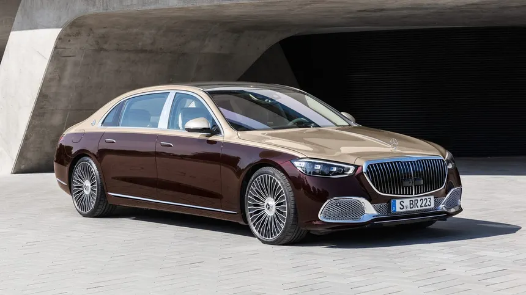

Mercedes Benz Maybach S-Class predstavlja apsolutni vrhunac luksuza,inzinjeringa i prestiza
ima V12 Biturbo (S 680) motor koji razvija 612ks, V8 Biturbo (S 580e) motor koji razvija 503ks i Plug-in-Hibrid (S 580e) koji razvija 510ks.
Maksimalna elektronski ogranicena brzina je do 250 km/h i ako motori (pogotovo V12) imaju snage bez problema da predju preko 300 km/h
→ ←